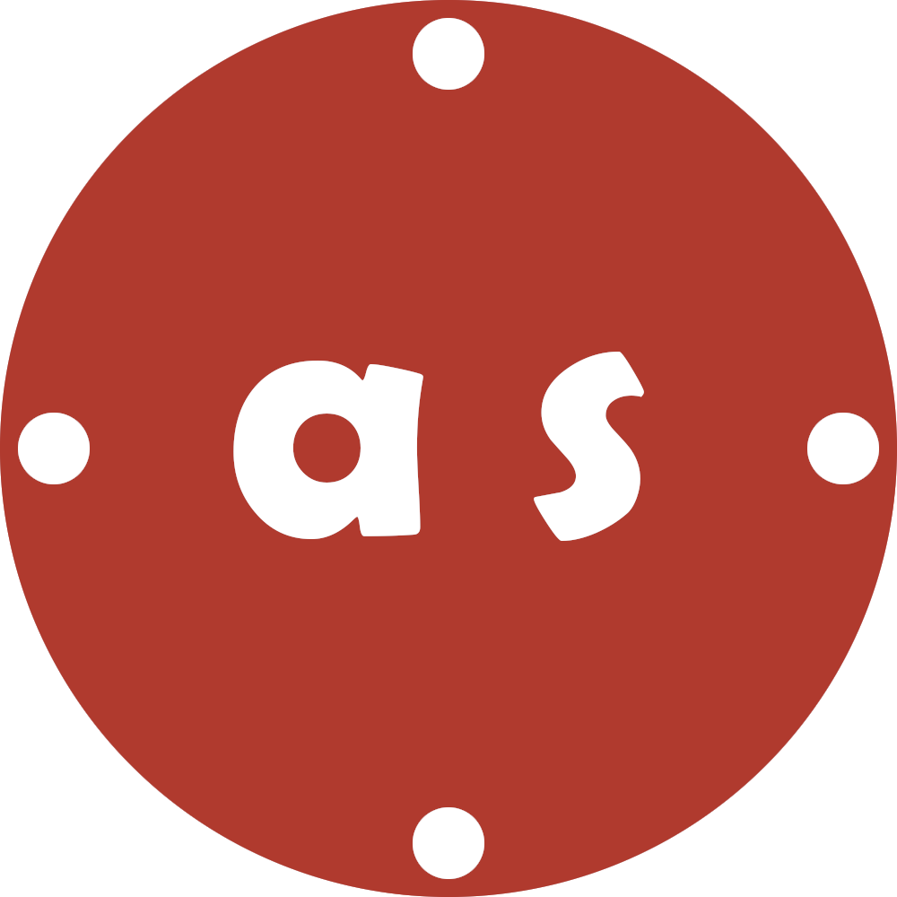

Janus

Janus is a Machine Learning API used to conduct future predictions and forecasting on supplied data. It utilizes a Long Short-Term Memory Recurring Neural Network model to make these predictions.